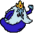

Reino Gelado
O Reino Gelado é um lugar cheio de mistérios, tragédias e aventuras. Governado pelo trágico Rei Gelado, é um dos reinos mais emblemáticos e recorrentes na série Hora de Aventura, proporcionando tanto desafios quanto momentos emocionantes para Finn, Jake e outros personagens.
Habitantes
Os principais habitantes do Reino Gelado são os pinguins, sendo Gunter o mais notável entre eles. Além dos pinguins, o reino também abriga outras criaturas adaptadas ao frio, como lobos de gelo e monstros de neve.
O Rei Gelado 
O governante do Reino Gelado é o Rei Gelado, cujo verdadeiro nome é Simon Petrikov. Antes de se tornar o Rei Gelado, Simon era um antiquário e cientista que encontrou uma coroa mágica. Ao colocar a coroa, ele ganhou poderes de gelo, mas também começou a perder sua sanidade e memória, eventualmente se transformando no excêntrico e solitário Rei Gelado que vemos na série.